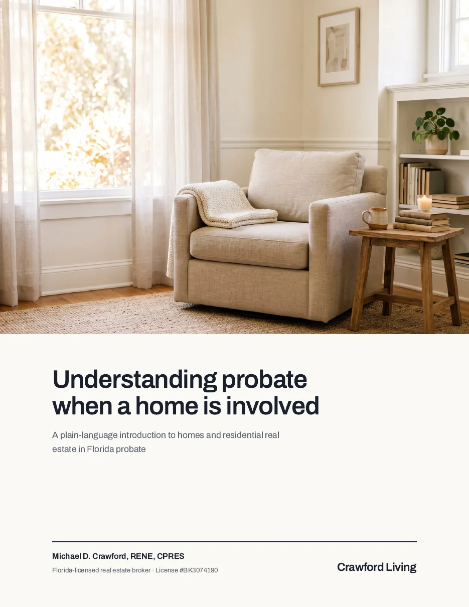

When an estate includes a home
You don’t have to understand all of probate today. A place to begin is enough.
Rather read it all at once? Get the free guideYou don’t have to understand all of probate today. A place to begin is enough.
Start with who can sign Talk it through Rather read it all at once? Get the free guideWhere to begin
In Florida, a home usually needs probate only when it was titled solely in the name of the person who passed away. A trust, a lady bird deed, or joint ownership with survivorship often passes the home without it.
The person who can sign a listing is the court-appointed personal representative, the successor trustee, or the heirs once title is in their names.
General information, not legal advice. Your attorney confirms how it applies to you.
What families ask about first
-

Who can sign, and when
Who has authority over the home, how long probate usually runs, and where homestead fits.
-
The house in the meantime
Insurance, an empty house, upkeep, and the belongings inside, while the estate is open.
-
Value and the choices
Why an estate can need more than one value, and how a family weighs keeping, renting or selling.
-
If the family sells
How a sale fits the estate’s timeline, and what a broker does and doesn’t do.
County guides: Orange Seminole Osceola Lake Volusia First steps
A sequence, not a single decision.
- 01Authority is established. The court, or the trust, decides who can act for the home.
- 02The home is protected: insured, secure and looked after while the legal work runs.
- 03The family gets a current picture of the home’s value and condition.
- 04Then the family decides: keep it, transfer it, rent it, or sell it. None of it has to be settled in a hurry.
Rather watch, or keep a copy?
A short walk through what happens with an inherited home in Florida before it can be sold. Prefer YouTube? Watch it there.

The free guide
Understanding probate when a home is involved: 18 pages to keep or share with family. Add the home’s address and you’ll also get a current value estimate.
Get the free guideSelling an inherited house in Florida
Can you sell a house before probate is finished in Florida?
Often, yes, but not before someone has the authority to sign. In a probate estate, that authority comes from the court, through the Letters of Administration naming the personal representative. Once it exists, a home can frequently be sold while the rest of probate continues, though the proceeds may be held until the estate’s debts are settled. Whether the court must approve the sale is a question for your attorney.
How long can a house stay in probate in Florida?
Summary administration often takes a few weeks to a few months. Formal administration more often takes six to twelve months, and some estates take longer. The required creditor period can’t be shortened, and the home’s costs (insurance, utilities, taxes, upkeep) keep running the whole time, which is why it helps to think about the home early.
Who owns the house while it is in probate?
In practical terms, the home usually stays in the name of the person who passed away until it is transferred by deed or court order. The personal representative manages and protects it for the estate in the meantime. A home that qualifies as protected homestead can be treated differently, so your attorney confirms how it applies.
Can I sell my parents’ house after they pass away?
Usually, once the right person has authority. How the home was titled decides the path. A home held in a living trust can often be sold by the successor trustee without probate. A home held jointly with a surviving owner may pass directly to that person. Otherwise, probate establishes who may sign. The first call is to a probate attorney, who can tell you which applies.
Is it harder to sell a house that is in a trust?
Often it is simpler, because a home in a living trust can usually pass outside probate. The successor trustee signs instead of a court-appointed personal representative, and the title company will typically ask for trust paperwork and a death certificate. After that, timing depends mostly on the family’s readiness and the market.
Do I have to pay taxes when I sell an inherited house?
That is a question for your CPA or tax advisor, and it is worth asking before you sell. Ask specifically how the home’s value on the date of death affects your situation. A broker can help document the home’s value; the tax answer belongs to your tax professional.
A phone call, and usually not a long one.
You tell us where things stand, we’ll tell you what to expect, and you decide whether it’s worth going further. No charge for that conversation, and nothing attached to it.
If the timing isn’t right, that’s a perfectly good answer. “I don’t know yet” is a fine answer to any question on the form, too.